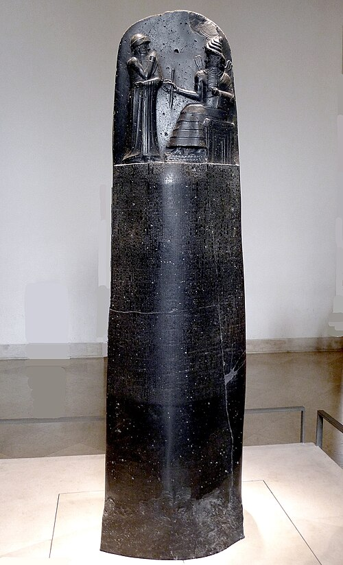

Code of Hammurabi
A pillar of black basalt, 2.25 meters tall, covered in cuneiform. At the top: King Hammurabi of Babylon receives the laws from the sun god Shamash. Below: 282 laws — among the oldest written in the world.
"If a man puts out the eye of another man, his eye shall be put out." The logic of lex talionis, set in stone before Moses was born.
A traveling monument: looted from Babylon by the Elamites around 1155 BCE and taken to Susa, where French archaeologists found it in 1901.